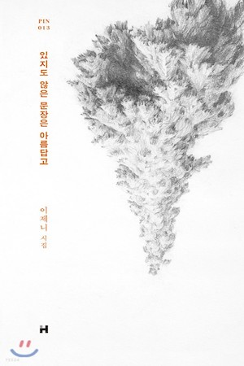
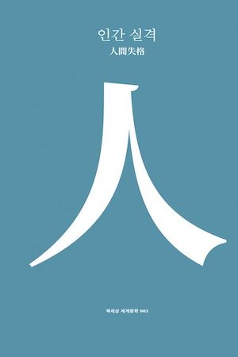
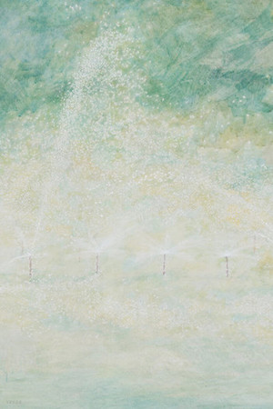

#이제니의 시집
#스물 여섯편의 시
#★★★☆☆
-
이제니 시인의 시집.
현대문학 핀 시리즈 시인선 13권.
발군의 언어감각으로 열정적인 독자층을 확보하고 있는 이제니 시인이 세 권의 시집을 상자한 후 출간하는 첫 번째 소시집.
언어와 언어 사이에서 울리는 리듬감을 자유자재로 구사하며 독자적인 시세계를 구축해온 시인은 스물여섯 편의 시편을 통해 고독한 독백의 하얀 시공에서 의도하지 않았던 의미들이
생겨나는 그 시적 과정 자체를 한 편 한 편의 시로써 온전하게 써 내려간다.
"아직 쓰이지 않은 종이는 흐릿한 혼란과 완전한 고독과 반복되는 무질서를 받아들인다.
손가락은 망설인다. 손가락은 서성인다.
이제니 시인을 가리켜 "계속해서 '사물과 세계의 이름을 초월'하는 낱말을 좇"(뮤지션 요조)는
사람이라고 리뷰한 뮤지션의 말처럼 관습과 언어 사이에서 치열하게 고민하는 흔적이 오롯이 담긴 소시집을 독자들 앞에 내놓는다.
-
이제니 시인의 시집은 늘 다양한 감동을 준다.
염세적인 이야기로 마음을 후벼파기도 하고, 애틋한 이야기로 마음을 데워주기도 한다.
이는 그런 다양한 감정들을 담은 시집이다.
-
- 이제니 시인의 시는 마음을 한 편을 쓰다듬는 느낌을 받곤 한다.
- 아름다운 문장의 추구. 그 노력의 아름다움.
- 말과 말의 겹과, 말과 말의 아름다움.
- 시인의 이름 때문에 구매한 책이다.
- 나의 세계를 추구하게 하는 책.

#인간실격 속 단편
#유다와 예수의 관계의 재해석
#★★★★☆
-
다자이 오사무 저의 인간실격, 직소.
작품은 '나'라는 화자가 서술하는 서문과 후기, 작품의 주인공인 요조가 쓴 세 개의 후기로 구성되어 있다. 태어날 때부터 다른 인간들을 이해할 수 없었던 요조는
세상에 동화되기 위해 익살꾼을 자처하지만 번번히 좌절하고 결국 마약에 중독, 자살을 기도하기에 이른다. 하지만 거듭된 동반 자살 시도에서 홀로 살아남은 요조는
본가로 부터 절연당하고 외딴 시골집에서 쓸쓸히 죽음을 기다리는 인간 실격자가 되고만다.
인간 실격에 함께 실린 '직소'는 유다가 예수를 고발하는 자리에서 늘어놓는 이야기다.
일반적인 해석과는 달리, 예수를 흠모하고 사랑했지만,
그 사랑을 거부당한 데 대한 분노와 반발심으로 예수를 팔아넘긴 유다의 갈등과
변민을 생생하게 묘사한다.
-
모두가 추천하는 명작에는 정답이 있을까?
처음엔 단순히 명작이라는 이유로 읽었던 책이었다. 평가와는 다른 생각에 의아하기도 하고, 내가 찾지못한 것들이 있을까 다시금 찾아보기도 했다.
아쉬운 마음으로 책을 덮기전 발견한 직소. 유다와 예수의 관계를 재해석했다는 색다름과 더불어 유다의 감정 표현이 적나라하게 드러나있다.
오히려 나는 그것에 매료되었다.
솔직하고, 어찌보면 치졸한 그 감정들의 나열이 오히려 생각할 거리를 던져주는 것만 같아 좋았다.
-
- 인간의 격이라는게 인격만 있는게 아니라 실격도 있음을 알았다.
- 자기합리화를 위한 책
- 신뢰는 죄인가요? 무저항은 죄인가요?
아직도 인간과 세상을 두려워하며 공포에 떨며
처절하게 외치는 요조의 외침이 들리는듯 하다.

#권누리의 시집
#빛과 사랑
#★★★★☆
-
‘빛’과 ‘사랑’의 시집, 『한여름 손잡기』
이 시집은 옷장 문을 열고 나와, 빛을 향해, 사랑을 향해, 본능적으로 움직이는 마음의 기록이다. 이는 굴광성(屈光性)의 마음의 기록이다.
시인 권누리는 투명도가 높은 눈부신 언어로, 크리스털 유리잔에, 스테인드글라스에, 프리즘에 닿는 찬란하고 어지러운 빛을 다정하게 담아낸다.
모든 시는 어떤 형태로든 침묵을 품고 있다.
권누리의 시는 지금 이 순간 세상 군데군데 숨겨져 있다고 여겨지는 온갖 형태의 침묵을 가장 끈질기게 비집으며 시작되고 있다.
시인은 침묵의 자리를 다른 소리 체계가 꿈틀대는 곳임을 적극적으로 감지하고,
그곳으로부터 지금 세계가 원하는 답을 거절하는 질문이 경쾌하게 새어나오도록 둔다.
-
동화같은 따뜻한 말로서 사랑을 표현한 시집을 정말 좋아한다.
글과 단어를 곱씹으면 곱씹을 수록 좋아지는 시집이었다.
시를 읽으면 많은 것을 상상하게 된다. 사랑하는 사람이 떠오르기도 하고, 좋아하는 것들이 떠오르기도 한다.
그것들을 떠올리며
따뜻함을 차오르게 해주는 시집이었다.
-
- 슬픔을 아름답게 받아들이려고 노력하게 돼요
- 슬픔이 많은 이 세상에서 더 지낼 수 있는 힘을 받았습니다.
시와 해설의 균형 또한 무척 좋았고, 제가 알지 못하던 장소와 사람들을 상상하게 만들었어요.
- 여름의 말들, 동화 같기도 하고 어떤 말들은 비연속적이고 투명한 매력이 함께했던 책.